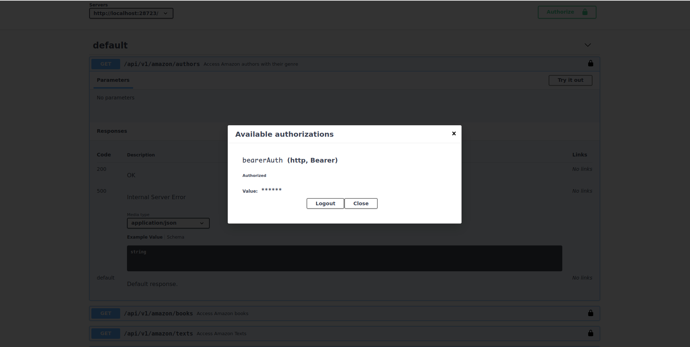
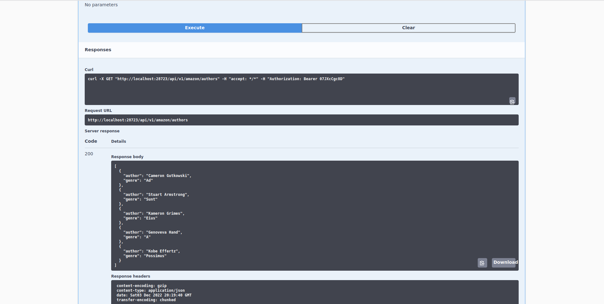
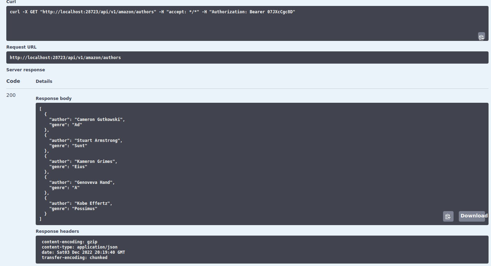

Introduction to APIs
Introduction REST APIs
Webscraping is unstructured in nature
Not beneficial for companies
Potentially harming business operations
Cleaning scraped data is cumbersome
Website might change
Introduction REST APIs
REST APIs are a natural response to that.
REST APIs are a two party contract
Structured way for businesses to give you data
Companies decided to create a custom 'portal' where a user, after authenticating and accepting the agreements of using this 'portal', can access much of the data they can see on a companies website (but not necessarily what you're looking for, it is their prerogative).
Introduction REST APIs
Users should be careful distinguishing between APIs and REST APIs. APIs are the interface of any program. In contrast, a REST API is a data transfer design for users to share data over the internet. In this chapter we'll be discussing exclusively REST APIs
Introduction REST APIs
Hey, but can you show us an API!?
library(scrapex)
res <- api_amazon()[1] "Visit your REST API at http://localhost:28723"
[1] "Documentation is at http://localhost:28723/__docs__/"APIs have URLs which have documentation
Documentation is PARAMOUNT for APIs
For example: Spotify API docs
Introduction REST APIs

Introduction REST APIs
APIs have endpoint which return specific data
Each endpoint has documentation on its inputs/outputs

Introduction to REST APIs
No input parameters needed. This endpoint returns all available authors in the Amazon Book Store so it does not need any parameters.
It allows you to try out this endpoint with a button that says
"Try it out".This endpoint has two codes:
200which means is OK and500which means that something wrong happened.Returns a
JSONstring, a typical format used for sharing data over the web.
Authenticating in REST APIs
Fake API, code: fmcQoAZnnU

Requesting from a REST APIs
Requesting data from /api/v1/amazon/authors

Requesting from a REST APIs

Requesting from a REST APIs
Things to pay attention to:
Status code. In this case 200.
Data is what is expected: 5 authors in Amazon database.
Format is JSON
Headers: think of them as attachments. Important: authentication.
Analogy headers
Response is like an R list:
response = list(
status_code = 200,
response_header = c("Authorization" = "private", "content-type" = "application/json"),
response_body = data()
)Header data: encoding of the response, the date and the transfer encoding.
Summary
REST APIs have a base path.
REST APIs are structured around endpoints. For example
https://api.spotify.com/v1/artistsEndpoints might not or might have parameters to filter data.
The docs of the REST API documents parameters of each endpoint.
Many REST APIs need authentication tokens for making requests.
REST APIs response return status codes and headers